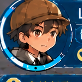
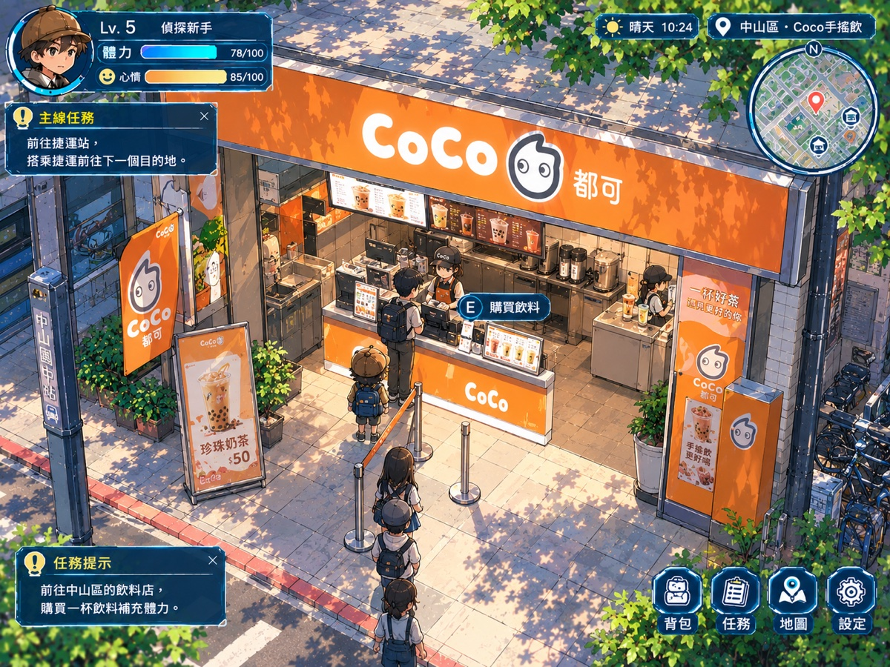
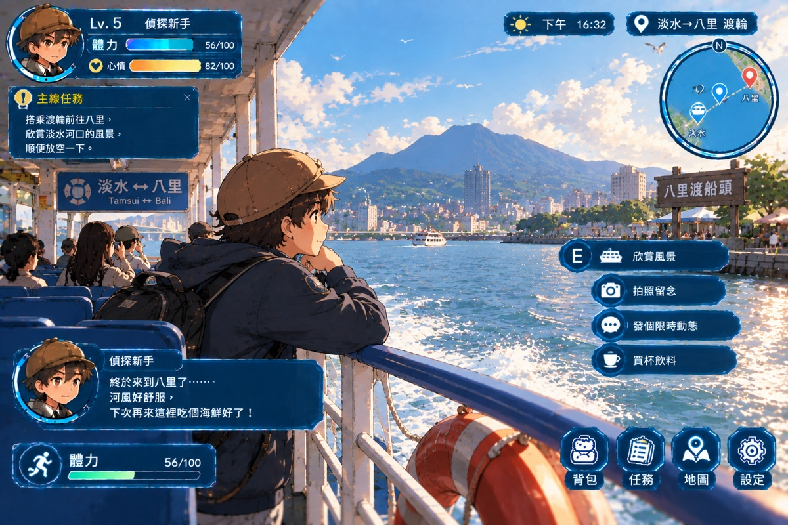
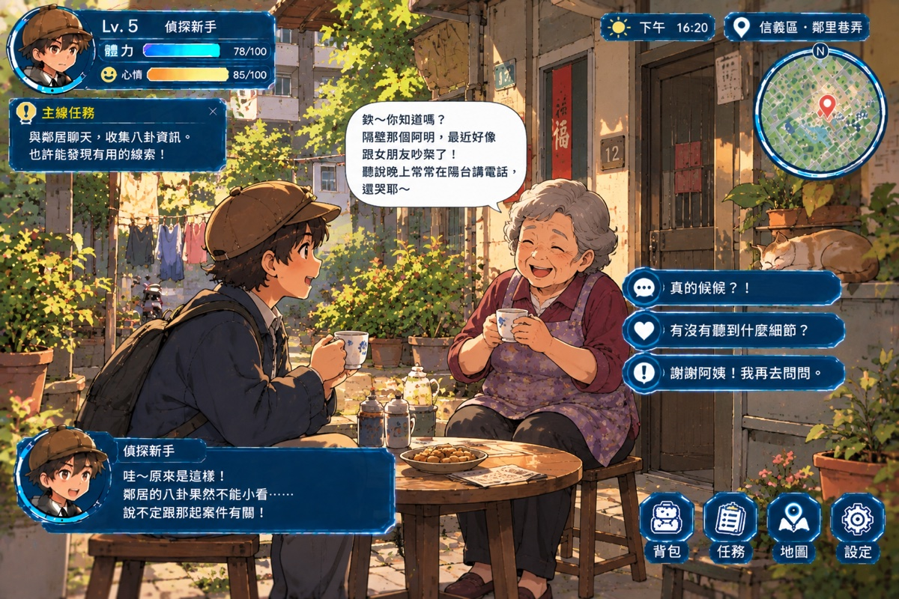
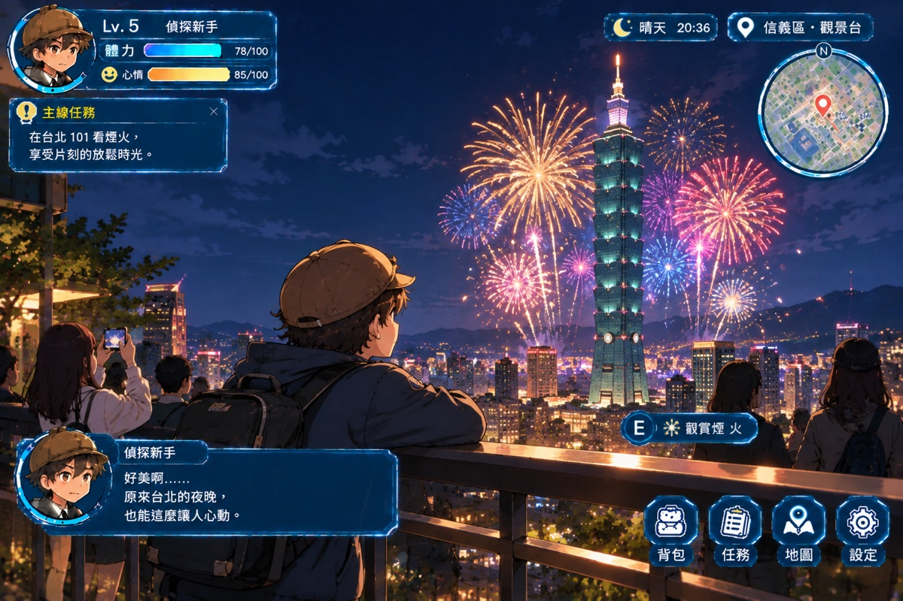
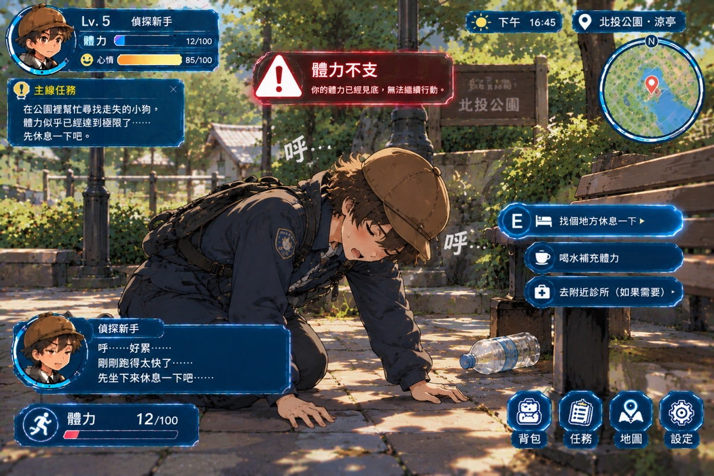
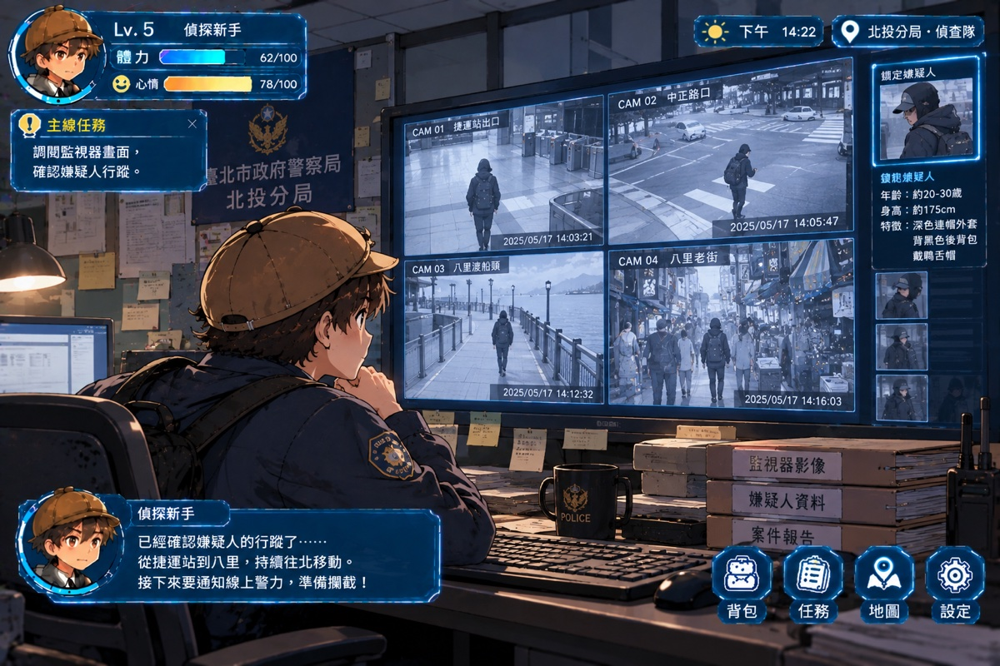

店員親切問候：「一杯好茶，遇見更好的你！小偵探今天想喝點什麼？」
店員招呼：「大偵探歡迎光臨！熱騰騰茶葉蛋剛起鍋喔！」

望向遠方的觀音山與對岸八里渡船頭，微風徐徐拂過，整個人心情完全放鬆。

選擇你的偵探回應：

璀璨絢麗的煙火在台北 101 高空綻放！城市夜景璀璨迷人，心情值全面回滿！


年齡：約 20-30 歲
身高：約 175 cm
特徵：深色連帽外套、背黑色後背包、戴深色鴨舌帽
請出示正確的鐵證當場打臉：
你運用了悠遊卡時序比對與 CCTV 軌跡分析，成功戳破嫌疑人的不在場謊言，追回所有失竊物品！
實際走到 CoCo 都可手搖飲門口購買飲料補充體力。
實際走到全家綠白藍發光招牌處，購買茶葉蛋 ($13)。
調查台北車站站前花圃留下的神祕紙條。
走到警車處，以 TIB 悠遊卡紀錄當場打臉嫌疑人！
台北車站（紅線 R10 ✕ 藍線 BL12）為核心樞紐，可搭捷運前往西門町與淡水老街！
在本地執行時請於後台輸入 node server.js 啟動私服器！GitHub Pages 自動啟用同儕偵探共享模式。
node server.js